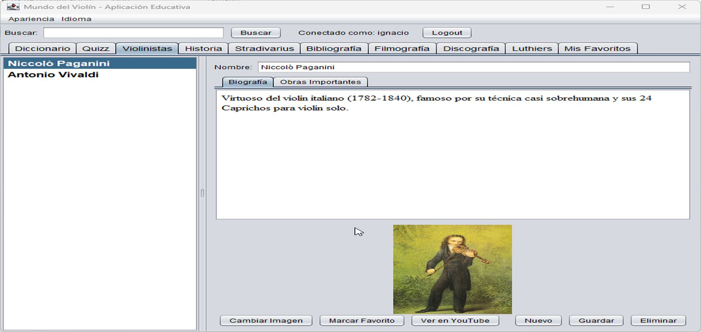
MundoViolin es una aplicación de escritorio robusta
desarrollada en Java puro (Swing) diseñada para gestionar, explorar y aprender sobre el mundo
del violín. Funciona como un catálogo interactivo, diccionario y herramienta educativa con
soporte multiusuario y persistencia de datos local.
Nota: Necesitas tener Java instalado en tu equipo para poder ejecutar este archivo.
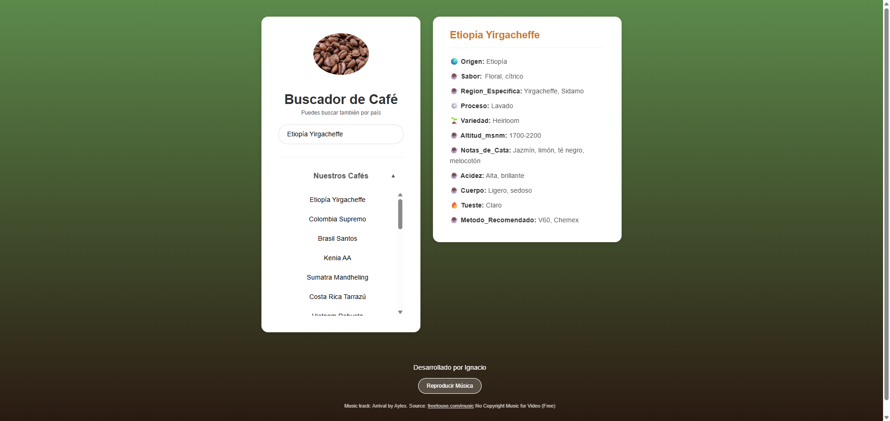
Una aplicación web interactiva y responsiva diseñada para buscar,
descubrir y visualizar información detallada sobre diferentes tipos de café. Este proyecto
utiliza Google Sheets como base de datos (Backend) para gestionar el inventario de cafés de
forma sencilla y gratuita.
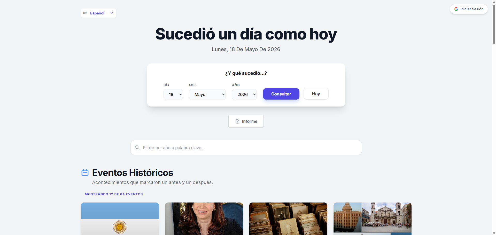
- React
- Node.js
- TypeScript
- Firebase
Un Día Como Hoy es una aplicación web interactiva que permite a los
usuarios explorar la historia universal viajando a través del tiempo. Descubre qué eventos
importantes, nacimientos y fallecimientos ocurrieron en cualquier fecha del calendario.
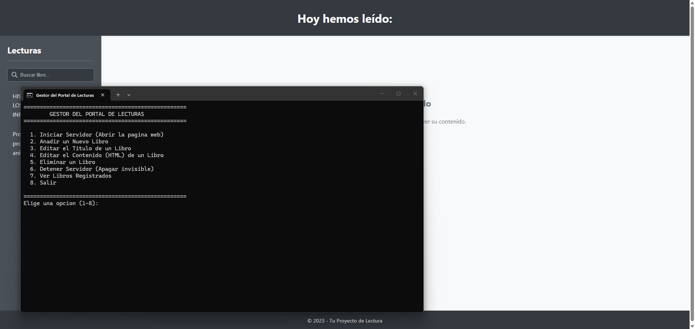
- JavaScript
- CSS
- Batchfile
- HTML
Un gestor de contenidos (CMS) local y ligero diseñado para organizar
apuntes, resúmenes, mapas conceptuales, audios y guías de estudio de tus lecturas. Funciona sin
dependencias de bases de datos complejas, utilizando un archivo CSV como origen de datos y
scripts interactivos de Node.js para automatizar la gestión de archivos. Ideal para estudiantes,
investigadores y lectores empedernidos que buscan un entorno de estudio personal y con
privacidad total (funciona 100% offline).
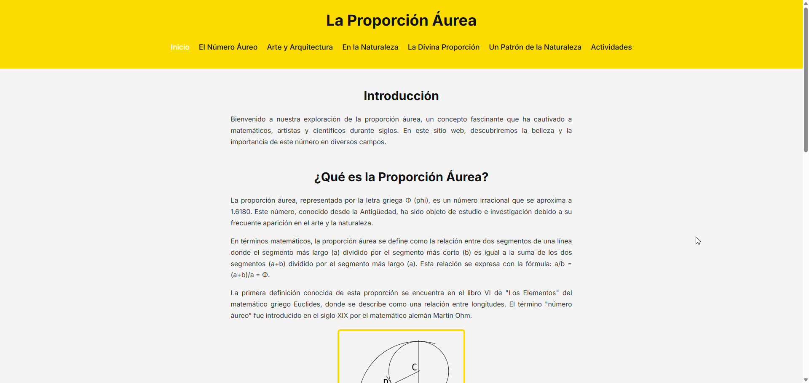
Este es un proyecto web educativo e interactivo diseñado para explorar
en profundidad el fascinante mundo del Número Áureo (Φ) y su estrecha relación con la Sucesión
de Fibonacci. A través de diferentes secciones, la página web explica de forma visual e
intuitiva cómo estas proporciones matemáticas perfectas se manifiestan en diferentes disciplinas
a lo largo de la historia y en nuestro entorno.
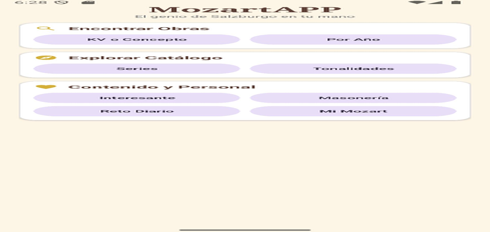
MozartAPP es una aplicación Android dedicada a explorar la vasta obra
de Wolfgang Amadeus Mozart. Diseñada para amantes de la música clásica y estudiosos, permite
navegar por el catálogo Köchel (KV) de una forma intuitiva, elegante y personalizada.
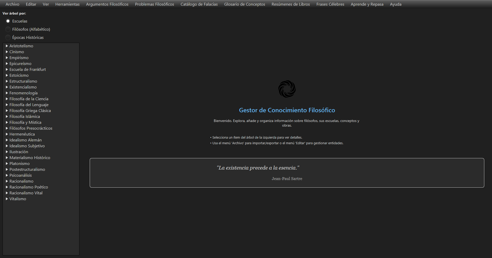
Una aplicación de escritorio diseñada para estudiantes, académicos y
entusiastas de la filosofía que deseen organizar, explorar y analizar información filosófica de
manera estructurada y visual. Se organiza el conocimiento por filósofos, escuelas y épocas
históricas, siendo el objetivo no dar una aplicación completa, sino una aplicación adaptable
para que el usuario la haga crecer de forma personalizada con su trabajo en el estudio
filosófico.
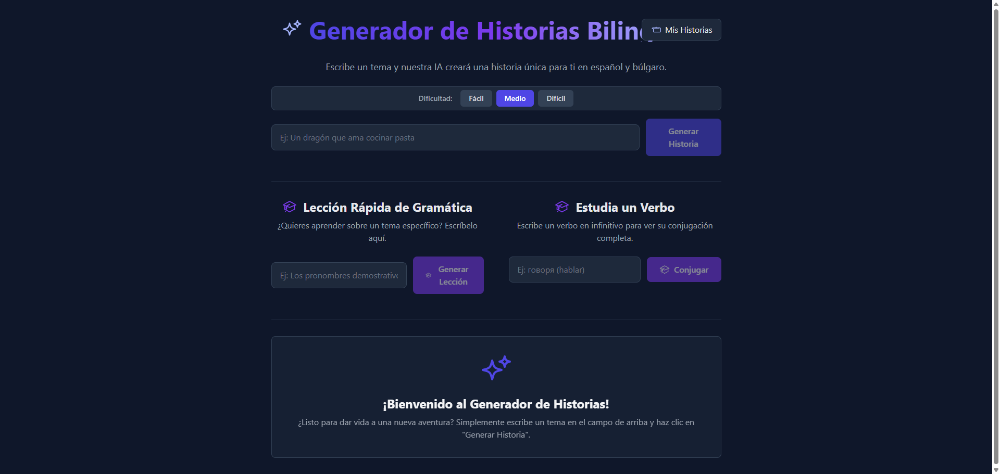
Una aplicación web interactiva impulsada por Inteligencia Artificial
diseñada para ayudar a hispanohablantes a aprender búlgaro de una forma entretenida. La
aplicación utiliza los últimos modelos de Google Gemini (Gemini 2.5 Flash e Imagen 3) para
generar historias, imágenes, lecciones de gramática y conjugaciones verbales al instante.
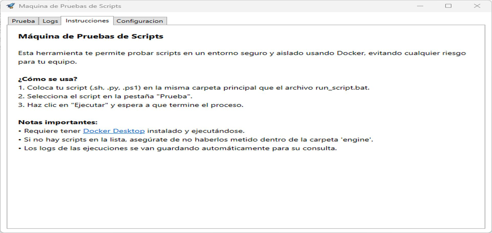
- PowerShell
- VBScript
- Shell
- Docker
- Python
Esta carpeta contiene una máquina de pruebas universal capaz de
ejecutar scripts:
Bash (.sh)
Python (.py)
PowerShell (.ps1)
Además, detecta automáticamente si un script Bash necesita herramientas avanzadas y selecciona
el entorno adecuado.
Funciona en Windows, macOS y Linux sin necesidad de instalar WSL ni Linux.
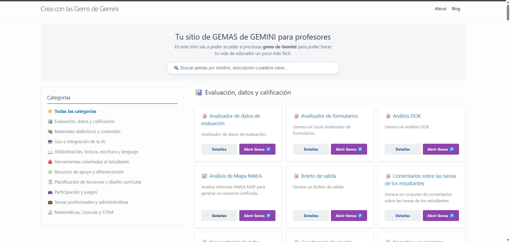
Un sitio web estático generado con Jekyll, diseñado para recopilar y
exhibir de forma estructurada mis "Gemas" (configuraciones y prompts personalizados) creadas
para la inteligencia artificial de Google Gemini. El proyecto aprovecha la eficiencia de Ruby y
SCSS para ofrecer un catálogo visual, ligero y muy fácil de mantener mediante archivos Markdown.
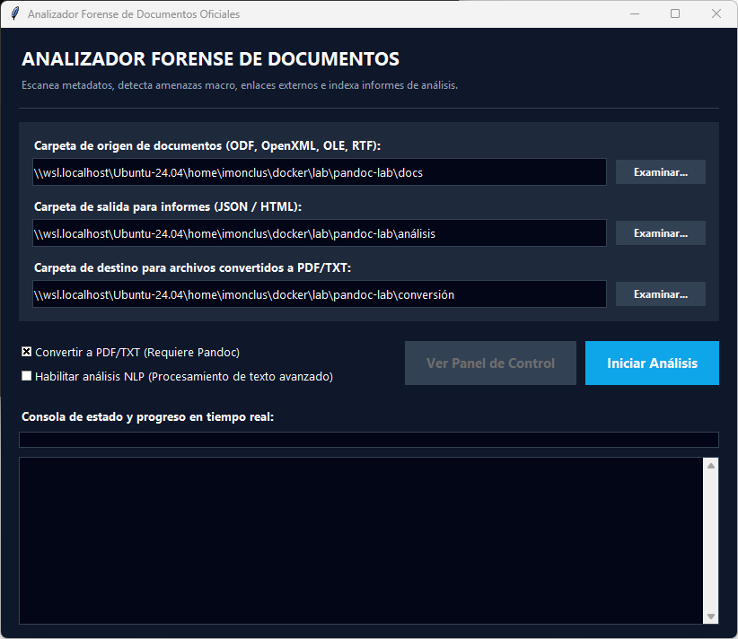
DocXray es una suite de análisis estructural, auditoría de conformidad
y análisis forense digital para documentos de oficina (formatos ODF, OpenXML, OLE y RTF). La
herramienta inspecciona en profundidad la integridad física de los contenedores ZIP, analiza la
conformidad XML, optimiza recursos y evalúa la seguridad forense mediante la detección de
macros, hipervínculos sospechosos y metadatos.
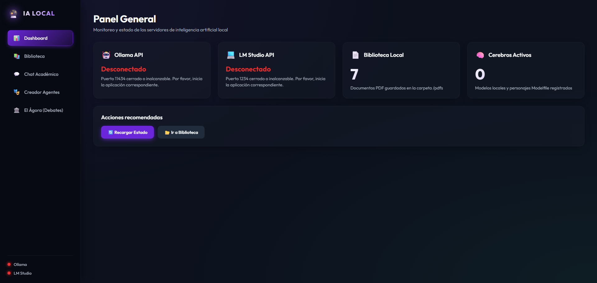
- Python
- JavaScript
- HTML
- CSS
- Batchfile
Un entorno completo, interactivo y profesional desarrollado en Python y
HTML/CSS/JS clásico para interrogar documentos PDF, gestionar modelos locales, crear personajes
personalizados (Modelfiles) y ejecutar debates filosóficos automatizados (Tríada Dialéctica).
Todo el sistema se ejecuta 100% de forma local protegiendo la privacidad de los documentos
mediante la integración de Ollama y LM Studio.
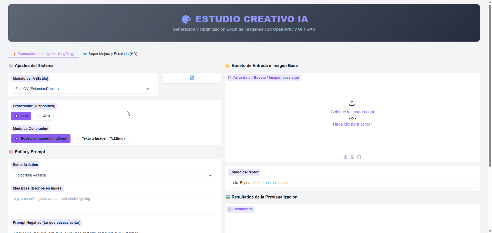
Este proyecto es un generador de imágenes local y offline basado en
Stable Diffusion 1.5, optimizado para ejecutarse a máxima velocidad en hardware local (tanto CPU
como GPU integrada/dedicada) utilizando la tecnología OpenVINO™ de Intel. Ofrece tanto una
interfaz web gráfica (GUI) moderna e intuitiva construida con Gradio como una interfaz clásica
de consola (CLI), además de herramientas automáticas para compilar y fusionar modelos
personalizados y LoRAs.
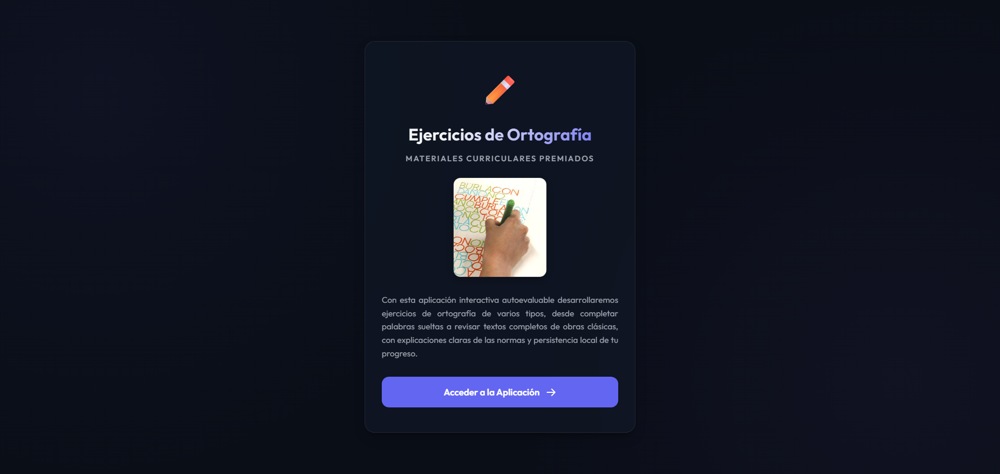
- HTML5
- JavaScript
- CSS
- Python
Este repositorio contiene una versión modernizada de la suite
interactiva de Ejercicios de Ortografía, un recurso educativo galardonado en la convocatoria de
Premios a Materiales Curriculares del Ministerio de Educación y Ciencia de España (2005). La
aplicación original, que dependía de tecnologías web obsoletas (marcos frameset, ventanas
emergentes, etc.) e incompatibles con los navegadores actuales, ha sido reconstruida por
completo como una Aplicación de Página Única (SPA) moderna, responsiva y accesible.
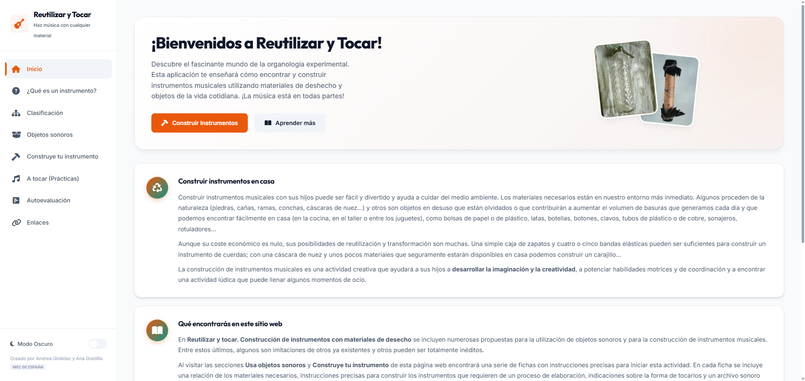
- HTML5
- JavaScript
- CSS
- Python
Reutilizar y Tocar es un recurso educativo e interactivo diseñado para
promover la construcción de instrumentos musicales a partir de materiales diversos, la
experimentación con objetos cotidianos y la práctica instrumental en entornos escolares y
familiares.
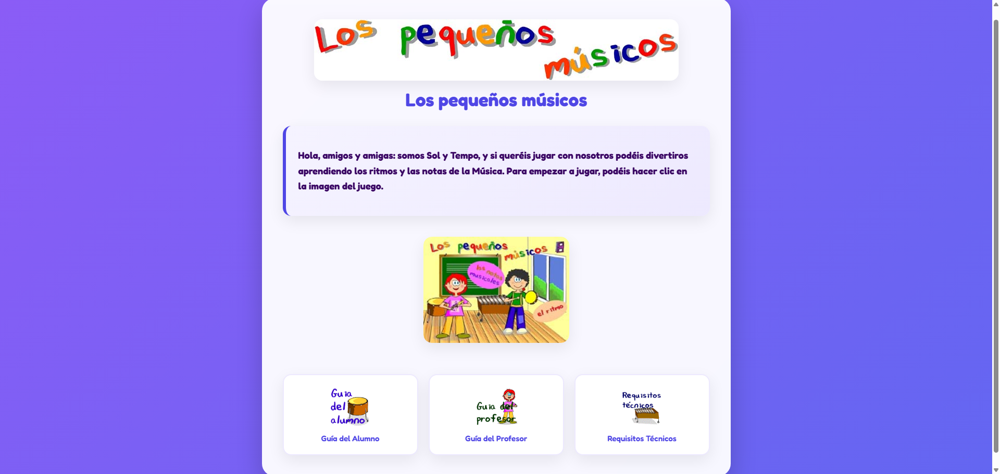
- HTML5
- JavaScript
- CSS
- Python
Este repositorio contiene una adaptación y preservación moderna de la
aplicación educativa clásica "Los pequeños músicos", diseñada originalmente para enseñar ritmos
y notas musicales a niños y niñas en edad escolar..
{kind=link}
{kind=link}
{kind=link}
{kind=link}
{kind=link}
{kind=link}
{kind=link}
{kind=link}
{kind=link}
{kind=link}
{kind=link}
{kind=link}
{kind=link}
{kind=link}
{kind=link}
{kind=link}